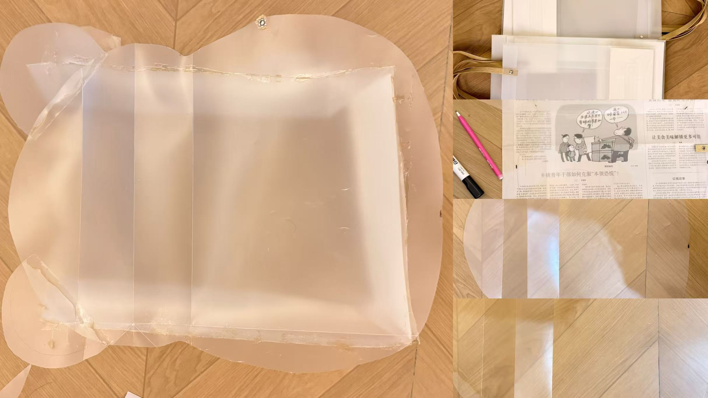

A translucent, layered “bear” silhouette that houses five everyday objects and their memories.
Materials aim to be lightweight, tactile, and slightly dreamy — a container that both protects and reveals.
Concept visualization
Making Process
Sketch → layers → assembly → finish

Final Piece
Layered, translucent, bear-like outline with a central chamber for the objects.